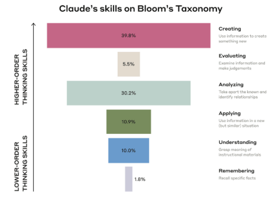

Kapitel 1 – KI als Hilfe zum Lehren und Lernen
Wie kann uns generative künstliche Intelligenz (KI) in der Lehre helfen? Hoffnung besteht hier für zwei typische Probleme: Erstens haben Studierende individuelle Bedürfnisse, aber wir haben nur begrenzte Zeit, auf diese einzugehen. Wie können wir Einzelne möglichst intensiv fördern, ohne vor Arbeit unterzugehen?
Zweitens ist der Aufwand gerade für effektive Lehrmethoden oft sehr hoch – so etwa für häufige niedrigschwellige Tests oder individuelles Feedback zu Studienarbeiten (s. etwa Hattie (2023), Kap. 13; Brown, Roediger, and McDaniel (2014)). Wer lehrt, fühlt sich aus Zeit- und Stoffdruck oft gezwungen, Abstriche von idealen Lehr-Setups zu machen (Henderson and Dancy (2007); Schmidt and Tippelt (2005), S. 104–105). Gerade Lehrmethoden, die didaktisch sinnvoll, aber mit hohem Aufwand verbunden sind, drohen dabei auf der Strecke zu bleiben (Brown, Roediger, and McDaniel (2014)).
Für die Lehre erschließen sich durch die großen KI-Sprachmodelle (LLM = Large Language Models) neue Möglichkeiten. Sie sind – wie es eine Analyse des MIT-Professors Andrew McAfee auf den Punkt bringt – „generally faster“ (McAfee (2024)). Lehrende können mit KI-Unterstützung etwa deutlich schneller ein Set von Übungsaufgaben erstellen, mehrere Anwendungsbeispiele pro Konzept hinzufügen, Quizfragen zur schnellen Lernüberprüfung generieren oder mit den Studierenden Rollenspiele durchführen (Meincke, Mollick, and Terwiesch (2024); Mollick and Mollick (2023)).
Der Berg ist noch da, aber mit dem E-Bike kommt man weiter.
Immer mehr Aspekte typischer Forschungstätigkeiten – ein zentraler Ausbildungsinhalt der Hochschulen – können zunehmend von der KI übernommen werden, und zwar auf hohem Niveau. Vorbei sind die Zeiten, in denen wir die banalen Schreibprodukte der KI nur belächeln konnten.
Ein Überblicksartikel des Forschers Anton Korinek im renommierten Journal of Economic Literature vom Dezember 2024 fasst das deutlich höhere Niveau zusammen:
„Die derzeitige Generation von LLMs ist in hohem Maße in der Lage, die wichtigsten Erkenntnisse von Forschungsarbeiten zu verarbeiten.“
(Korinek (2024), S. 3; Übersetzung RB mit DeepL)
Die professionelle Nutzung ist hier noch weiter: So demonstrierte etwa Google (2025) ein mehrstufiges Modell für die Pharma-Forschung („AI co-scientist“) , das den Forschenden zeitintensive Zwischenschritte abnimmt (Gottweis et al. (2025)). Auch im Peer-Review werden zunehmend Sprachmodelle eingesetzt – mit allen Vor- und Nachteilen, die das mit sich bringt (Naddaf (2025a)). Wie wir in den späteren Kapiteln sehen, experimentieren Hochschulen weltweit intensiv mit den neuen Möglichkeiten für Lehre und Forschung.
Drei zentrale Weiterentwicklungen zwischen 2024 und 2025 sind laut Korinek (2024) (S. 2–3) für den deutlichen Sprung in forschungsrelevanten Fähigkeiten der Sprachmodelle verantwortlich:
Erstens neue Interaktionsmöglichkeiten - Während die typische Nutzung früher auf Texteingabe im Eingabefenster beschränkt war, bieten die großen Sprachmodelle mittlerweile die Möglichkeit, in einem Workspace gemeinsam an Text oder Code zu arbeiten (z. B. ChatGPT Canvas, Claude Artifacts).
Zweitens eine deutliche Verbesserung der Problemlösefähigkeit (Reasoning) der Modelle. Den stärksten Modellen (GPT-5, Gemini 2.5, Claude Opus 4.1) kann man mittlerweile dabei zusehen, wie sie mehrstufiges Problemlösen und logisches Schlussfolgern etwa bei Rechercheaufgaben durchführen. Die Bedeutung präziser Prompt-„Zaubersprüche“ nimmt ab, da die neueren Reasoning-Modelle ohnehin selbst Schritt für Schritt vorgehen und nachfragen (Meincke et al. (2025a)). Insgesamt steigt seit 2023 die Qualität der Aufgaben, die Sprachmodelle erledigen können, stark an. Empirische Untersuchungen zeigen, dass die Modelle immer längere Aufgaben auf hohem Niveau bearbeiten können (Kwa et al. (2025)).
Was ändert sich durch GPT-5?
Aus User-Sicht ist GPT-5 im Vergleich zu Vormodellen selbstständiger geworden – User müssen nicht mehr selbst zwischen vielen unterschiedlichen Modellen auswählen. Je nachdem, wie einfach die Frage ist, wird Schnelligkeit bevorzugt (durch Nutzung eines kleineren Modells wie GPT-5 nano) oder es wird ein schwereres Werkzeug angelegt (mehrstufiges Suchen und Reflektieren mit einem größeren Modell). Diese „schlaueren“ Reasoning-Modelle werden somit jetzt gerade für komplexere Fragen häufiger zur Anwendung kommen – nach Herstellerangaben stieg die Nutzung dieser stärkeren Modelle unter den zahlenden Usern von 7 % auf 24 %, was insgesamt die Qualität der Ergebnisse steigern sollte.Die neuen Modelle sind wiederum deutlich effizienter geworden, mit stark sinkenden Kosten pro Prompt. Eine Million Token kosteten mit GPT-4 noch 50 Dollar, jetzt nur noch 14 Cent (InvertedStone n. d.; Mollick 2025a, 2025b). Das Modell halluziniert (weiterhin – also Vorsicht! – aber) deutlich seltener als seine Vorgänger: OpenAI gibt hier ca. 1 % Halluzinationen der Antworten statt ca. 5 % bei Vorgängermodellen (o3, 4o) an, je nach Komplexität der Frage und erlaubter „Bedenkzeit“ (OpenAI 2025a, 2025b).
Drittens hat sich die Internetsuche mit LLMs deutlich verbessert. Während man früher noch oft über sinnlose oder erfundene Ergebnisse lachte, stellt die Suche von ChatGPT, Google / Gemini oder speziellen Suchanbietern wie Perplexity mittlerweile eine große Zeitersparnis dar: „a useful tool to provide up-to-date answers to questions that are grounded in facts found on the internet, together with the requisite citations — a crucial capability for researchers“ (Korinek 2024, S. 3). Das gilt zunehmend für die stärksten allgemeinen Modelle und erst recht für Anbieter, die auf Forschungsrecherche (und Studierende) spezialisiert sind, wie Elicit oder Paperpal. Auch breite Internet-Recherchen und Textproduktionen sind zunehmend komplett delegierbar („deep research“), mit deutlichen Auswirkungen auf den Arbeitsprozess in der Wissensarbeit (s. etwa (Schwarcz et al. 2025) für juristische Recherchen, (Korinek 2024) für Ökonomie und (Liang et al. 2025) für PR-Tätigkeiten).
Auch Studierende nutzen bereits umfangreich Sprachmodelle für einen breiten Strauß an Zielen (siehe Abbildung1). Eine Auswertung der KI-Forscher:innen des Unternehmens Anthropic von einer Million anonymisierter Chats zwischen Usern mit Universitätskonto und dem KI-Bot zeigt typische Nutzungsmuster (Handa et al. 2025).
Studierende setzen das Sprachmodell vor allem für anspruchsvolle Tätigkeiten ein – etwa das Erstellen neuer Inhalte oder das Analysieren komplexer Themen –, was höheren Ebenen der Bloomschen Taxonomie entspricht. Daraus ergibt sich die Herausforderung, sicherzustellen, dass Studierende wesentliche kognitive Aufgaben nicht vollständig an KI delegieren: Aufgaben müssen angepasst und der verantwortungsvolle Umgang mit der Technik eingeübt werden.
 Quelle: Handa et al. (2025)
Quelle: Handa et al. (2025)

Quelle: Handa et al. (2025)